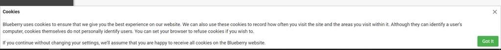
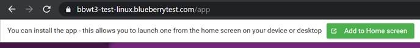
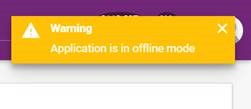

However, the most recent stable release which may include patches is always kept up to date in the master branch.
Note: from now on, the master branch doesn't contain the demo module. Several incomplete modules removed as well. So, you don't need to clean it up anymore.
Full code of stable version with all the code including the demo module is placed to a new demo branch.
See full description of new server-side CRUD services design in readme.md.
Key changes:
Internal classes/interfaces for CRUD/paging are significantly extended. Interfaces have become more fine-grained which gives flexibility to change CRUD services behaviour in separate parts: paging/data reader/data writer/data remover/data provider(DB context/AWS etc.). For example, for a custom service, we can use our out-of-the-box CRUD service and replace its data removing part to a safe-removing provider. For a downstream project that means we can do less code rewriting/duplications on behaviour overriding.
Interfaces/classes are extended with a wider list of generic DTO types, which allows us, for example, use one DTO type for listed items and second DTO type for picking up a single record.
For a downstream project, It's useful for grid pages when we need plain DTO's to be shown in a grid and detailed DTOs to be shown on master-page. We won't write extra code now to implement this separation but just will use a proper generic interface!
CRUD now is presented by a separate module BBWM.Core.Crud as it's a separate feature which can be versioned.
We removed the term "Grid" from Crud classes because Grid is associated with controls, that was a confusing mix-up. We use term Paged instead.
Base CRUD controllers classes' list extended with PagedDataControllerBase which implements paging + reading without writing data.
For a downstream project, it means avoiding potential security issues because you don't need to control access to write API methods. For example, we applied to out DB changes audit API and logins audit API where we just provide data as read-only.
We got rid of GetAll and DeleteAll API methods to be provided by default to avoid potential security issues. For example, you could inherit CRUD API functionality and forget to restrict access to GetAll/DeleteAll which could end up with revealing/loosing of sensitive data.
An API controller in a downstream project must manually add those methods and set correct access rights.
Added an option to use CRUD service to perform mapping on the SQL side. Usually, we do the mapping after data fetching from SQL. In some cases, the option can significantly reduce a server overloading because only a required number of fields get fetched.
All DTOs now inherit DTO base interfaces (IDto<id>, IBaseDto) to be:
§ tracked
§ explicitly defined in CRUD services as an object with an ID
Added SafeDataRemover, SafeCrudService and SafePagedCrudService services implementing safe removing. It's useful for services like users management that should simply inherit SafeCrudService so the records not deleted from the table but marked with IsRemoved flag.
Added front(ChildPagedCrudService) & back(ChildCrudControllerBase, ChildPagedCrudControllerBase) services to provide paging/CRUD functional for linked records.
Example: an admin, on the customers listing page, opens customer details, works with the customer's orders in the grid. Then new CRUD services do paging+CRUD for the customer's orders only.
(It's planned to add a separate demo page to demonstrate all the CRUD flexibility)
Customization
Created front folder for all the project-specific front code (/ClientApp/app/project). Now we won't mix up most of the front project code with core code. Project-specific page routes are placed into separate routing file.
In particular, the benefit is that front core updates shouldn't break project-specific code on merges.
Database
DB context supports retries (set up in app settings, there is a new section: DatabaseConnectSettings {} instead of BBWT {} section).
Critical fix for MySQL migrations - avoid charsets added to migration script.
DB Document feature
Vast DbDoc refactoring done. Its code has become readable.
Now supports and shows tables from multiple DB contexts/databases
Added UT tests (quite comprehensive) that test real (not fake) database schemas
Multiple fixes in UI.
Demo Module
Both front & back code restructured to feature-oriented structure (excepting the Northwind models functionality in the back-side code).
The demo menu is now more structured to demonstrate a separate feature on each page. We've almost sorted out the mess we had.
Front Core
Upgraded to Angular 9.1.7
Upgraded to PrimeNG 9.1.3
Grid
Fixed local data source (grid [data]="..") for the grid to work with CRUD operations
Added demo page for a grid using a local source (demo/local-grid)
Added an option to hide and disable fields in the creating/editing modal window
Added methods for showing/hiding action links per row
Added flexibility to customize filters set applied to the grid in front code. For example, you may need to additionally filter the grid by a property that is not placed into the filter panel
Added ClassName field to customize the column's styling
Added CurrencyCode to set custom currency. (it was USD only)
Fixed: now default date format of a grid's column is displayed as a short date using the site's locale (unless it's explicitly set a custom way for a column). Before the change, a default format was "DD/MM/YYYY".
Fixed: avoid submitting by Add button of the grid being placed into a form container
Added flexibility to customize filters set applied to the grid in front code. For example, you may need to additionally filter the grid by a property that is not placed into the filter panel.
Grid Filter
There is a new page to demonstrate the grid filters: /app/demo/grid-filter. It will be extended with other filter types and will incapsulate and demonstrate all the filtration options and practices.
default values in filter inputs now supported
Added a missed Boolean filter. Now if a DB model has a flag-field then it can be mapped to the Boolean filter of front-end.
Now it's possible to use a custom UI for a filter. UI is defined in an angular component and linked to the filter.
Example on /app/demo/grid-filter page (Customer Code filter)
Added new input types: number and currency. Previously we allowed a text input only, but now we use PrimeNG's new pInputNumber control for number/currency values with flexible formatting options (see /app/demo/grid-filter page)
Fixed: we had wrong records fetched after 100th page because of moment() data conversion
Fixed: we had a hidden long-term bug with date filter handling on a server (related to time-zone)
GUI
Re-designed the cookie banner. Now shown in the footer.

Added an option to show/hide a password in the password input. Added as an Angular directive <input … showPassword … />
New combobox control(<bb-combobox>) with lazy data loading.
A combo box is a combination of a drop-down list or list box and a single-line editable textbox, allowing the user to either type a value directly or select a value from the list. This UI-control is used when you need to specify a value from a huge list of data.
Now we can directly bind an API point to a dropdown component.
Detailed instructions added to the demo page Demo > Guidelines > Search. Additionally, the page is improved to show usage cases for three types of listing controls: Combobox, AutoComplete and Dropdown
Asterisk added for all fields that validated as required. In particular, asterisks are automatically added for auto-generated Add/Edit dialogue of the grid component.
Fixed: reset password & Confirm Email had different styling.
ID Hashing:
Vast refactoring of model hashing feature.
Filtering by hashed id - added new filter type: ObjectReference. So we get rid of the issue when needed to explicitly use id_original in server filtration
[IdBinder] for action parameters.
The Persons demo page now changed to demonstrate ID hashing options.
Menu:
Redundant "[x] For authorized users only" menu item's option removed
"[x] Visible" menu item's option added. Allows hiding a menu item overriding visibility determined by access rules. For example, can be useful to hide a broken page for a while.
Menu item's router link is changed from text input to dropdown with search option. The dropdown contains a full list of routes. So we avoid redundant typing as we had before, avoid making typo mistakes.
Items in JSON sorted the same order as the menu looks. Also, new sorting should fix possible merging conflicts that we had in JSON.
Fixed: opening master-details pages hid the menu item (e.g. Opening User Details page hid Users page menu item)
OData
Required NuGet packages installed, OData is set up in app's startup section (allowed $select, $expand, $filter etc. options)
Old Odata demo page is replaced with a new one containing two tabs. On the first, you can try out several presets of OData queries (to be extended). On the second one, a data fetching grid is placed.
PWA
Existent basic PWA code refactored to a separate Angular module
Added an option to notify when new app version is available with a dialogue to reload page
Added on option to install the web app on a user's device with dialogue:

Added an option to notify when the app goes offline:

Added an offline indicator with a hint on mouseover
Added PWA tab to the system configuration page. Options: Prompt install app (mobile/desktop), show offline indicator (mobile/desktop)
Roles & Permissions
Added Angular directives ([role]="...", [permission]="...") allowing to hide page controls depending on logged user roles/permissions. You simply add e.g. <tabPanel *role="SuperAdmin" > to show the panel for SuperAdmin only.
SonarQube
Fix: Now SQ project key is automatically set in CI script to avoid key duplication in downstream projects.
SSO
Added SSO support for Facebook/LinkedIn/google (placed in BBWM.SsoProviders server module)
Added SSO settings for all the providers to the system configuration page > Login tab
Added icons for SSO providers (Google/Facebook/LinkedIn) to the login page
System Configuration
Now we separate tabs shown for system admin and super admin. This change ends up with reducing the number of tabs shown for an admin. Super admin sees his tabs only, as well as a system admin.
System config settings are loaded with angular resolvers (set in routes), not in components.
Tests
Refactored test libraries so each library corresponds to its BBWM module
ID Hashing tests added
Extended users service with new tests
Added tests for email templates
Added tests for static pages
Added tests for DB Document feature
After forking
To consider when forking BBWT3 code for a new project:
Although this release is considered stable, it may contain bugs. Improving the quality of BBWT3 code is an ongoing process.
Permissions in BBWT3 are currently quite liberal since it is used as a customer demo. You may need to tighten these up for your customer project.
User management includes functionality for self-registration. You should remove it if your project does not need this feature.
Documentation
The BBWT3 team will make efforts to have the wiki documentation keep up with the code changes. Anyway, use a wiki (https://wiki.bbconsult.co.uk/display/BLUEB/BBWT3) in order to make your code consistent with BBWT3 principles.
The guidance that covers a feature creation steps through all the app layers and also describes some code practices is here: https://wiki.bbconsult.co.uk/display/BLUEB/BBWT3+Explained+to+Beginners. I do recommend to review it after each release, it should help you keep up with the latest BBWT3 code approaches and practices.
A Coding Tips section in repo's readme with a rule about incomplete code which comes from precedents. It's planned to put there, as ongoing amends, most critical things related to better code understanding/quality.
{kind=link}
{kind=link}
{kind=link}
{kind=link}